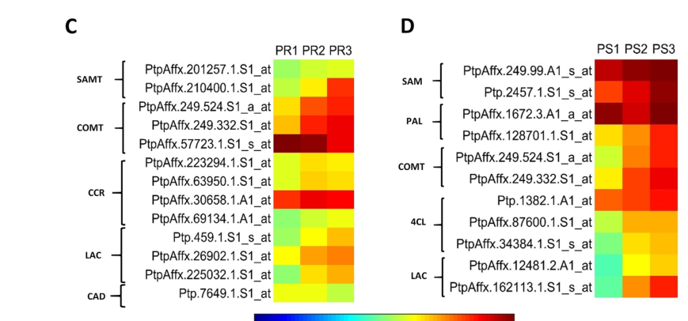

METK2 (also called S-adenosylmethionine synthetase 2, SAMS2) is a cytosolic S-adenosylmethionine synthase / methionine adenosyltransferase (MAT; EC 2.5.1.6) of the AdoMet synthase family. It catalyzes the conversion of L-methionine + ATP to S-adenosyl-L-methionine (SAM), with hydrolysis of the resulting triphosphate to phosphate and diphosphate. SAM is the universal activated methyl donor of one-carbon metabolism and sits at a major branchpoint node, being consumed by SAM-dependent methyltransferases (including the COMT/CCoAOMT O-methyltransferases of monolignol/lignin biosynthesis), and serving as the precursor for ethylene (via ACC synthase and the Yang cycle) and for polyamines (via decarboxylated SAM). In Populus trichocarpa, a gene annotated as SAMS2 is co-expressed with the phenylpropanoid/lignin genes PAL, COMT, 4CL and laccases and is up-regulated during stem secondary growth (PS2/PS3), consistent with a role in supplying SAM for lignin-related O-methylation during xylem/secondary cell wall formation. No Populus-specific enzymatic kinetics or experimental subcellular localization for A9PDZ7 itself have been reported; the reaction, family-level homo-oligomeric organization, and cytoplasmic localization are inferred from UniProt and from plant MAT/SAMS family studies.
| GO Term | Evidence | Action | Reason |
|---|---|---|---|
|
GO:0006556
S-adenosylmethionine biosynthetic process
|
IBA
GO_REF:0000033 |
ACCEPT |
Summary: METK2 performs the single committed step of S-adenosyl-L-methionine biosynthesis, forming SAM from L-methionine and ATP. This is the direct biological process for a methionine adenosyltransferase and is the appropriate process annotation. Falcon deep research independently defines plant MAT/SAMS (EC 2.5.1.6) as producing SAM from methionine and ATP and identifies SAM as the central activated methyl donor of one-carbon metabolism.
Reason: The enzyme forms S-adenosyl-L-methionine from L-methionine and ATP; UniProt assigns the dedicated SAM-from-methionine pathway (step 1/1) and falcon corroborates the reaction.
Supporting Evidence:
file:POPTR/METK2/METK2-uniprot.txt
PATHWAY: Amino-acid biosynthesis; S-adenosyl-L-methionine biosynthesis
file:POPTR/METK2/METK2-deep-research-falcon.md
the central activated methyl donor of one-carbon metabolism
|
|
GO:0004478
methionine adenosyltransferase activity
|
IEA
GO_REF:0000120 |
ACCEPT |
Summary: Methionine adenosyltransferase (S-adenosylmethionine synthase) activity is the core molecular function of METK2. The UniProt entry assigns EC 2.5.1.6 and the reaction L-methionine + ATP + H2O = S-adenosyl-L-methionine + phosphate + diphosphate. Falcon deep research independently confirms that plant MAT/SAMS (EC 2.5.1.6) catalyzes the conversion of methionine + ATP to SAM.
Reason: UniProt assigns EC 2.5.1.6 and the SAM-synthesis reaction; falcon corroborates the reaction at the family level.
Supporting Evidence:
file:POPTR/METK2/METK2-uniprot.txt
Catalyzes the formation of S-adenosylmethionine from
file:POPTR/METK2/METK2-uniprot.txt
EC=2.5.1.6
file:POPTR/METK2/METK2-deep-research-falcon.md
L-methionine + ATP → S-adenosylmethionine (SAM)
file:POPTR/METK2/METK2-deep-research-falcon.md
Plant methionine adenosyltransferase / S-adenosylmethionine synthetase (MAT/SAMS; EC 2.5.1.6) catalyzes the conversion of
|
|
GO:0005524
ATP binding
|
IEA
GO_REF:0000002 |
KEEP AS NON CORE |
Summary: ATP binding is required for the adenosyltransferase reaction (ATP is a co-substrate, with multiple ATP-binding residues annotated in UniProt), but it is a co-substrate-binding feature rather than the informative core molecular function.
Reason: Retain as a co-substrate binding feature supporting catalysis, not as the core function (methionine adenosyltransferase activity is the core MF).
Supporting Evidence:
file:POPTR/METK2/METK2-uniprot.txt
Reaction=L-methionine + ATP + H2O = S-adenosyl-L-methionine
|
|
GO:0005737
cytoplasm
|
IEA
GO_REF:0000044 |
ACCEPT |
Summary: Cytoplasm/cytosol localization is appropriate for this soluble AdoMet synthase. UniProt places the enzyme in the cytoplasm, and falcon deep research reports that plant MAT/SAMS proteins localize to the cytoplasm (and nucleus), consistent with cytosolic SAM provisioning. No direct subcellular localization evidence exists for Populus A9PDZ7 itself.
Reason: UniProt places the enzyme in the cytoplasm; falcon corroborates cytoplasmic localization for plant MAT/SAMS as family-level inference.
Supporting Evidence:
file:POPTR/METK2/METK2-uniprot.txt
SUBCELLULAR LOCATION: Cytoplasm
file:POPTR/METK2/METK2-deep-research-falcon.md
localize to the **cytoplasm and nucleus**
|
|
GO:0006556
S-adenosylmethionine biosynthetic process
|
IEA
GO_REF:0000120 |
ACCEPT |
Summary: METK2 performs the single committed step of S-adenosyl-L-methionine biosynthesis, forming SAM from L-methionine and ATP. This is the direct biological process for a methionine adenosyltransferase and is the appropriate process annotation. Falcon deep research independently defines plant MAT/SAMS (EC 2.5.1.6) as producing SAM from methionine and ATP and identifies SAM as the central activated methyl donor of one-carbon metabolism.
Reason: The enzyme forms S-adenosyl-L-methionine from L-methionine and ATP; UniProt assigns the dedicated SAM-from-methionine pathway (step 1/1) and falcon corroborates the reaction.
Supporting Evidence:
file:POPTR/METK2/METK2-uniprot.txt
PATHWAY: Amino-acid biosynthesis; S-adenosyl-L-methionine biosynthesis
file:POPTR/METK2/METK2-deep-research-falcon.md
the central activated methyl donor of one-carbon metabolism
|
|
GO:0004478
methionine adenosyltransferase activity
|
ISS
GO_REF:0000024 |
ACCEPT |
Summary: Methionine adenosyltransferase (S-adenosylmethionine synthase) activity is the core molecular function of METK2. The UniProt entry assigns EC 2.5.1.6 and the reaction L-methionine + ATP + H2O = S-adenosyl-L-methionine + phosphate + diphosphate. Falcon deep research independently confirms that plant MAT/SAMS (EC 2.5.1.6) catalyzes the conversion of methionine + ATP to SAM.
Reason: UniProt assigns EC 2.5.1.6 and the SAM-synthesis reaction; falcon corroborates the reaction at the family level.
Supporting Evidence:
file:POPTR/METK2/METK2-uniprot.txt
Catalyzes the formation of S-adenosylmethionine from
file:POPTR/METK2/METK2-uniprot.txt
EC=2.5.1.6
file:POPTR/METK2/METK2-deep-research-falcon.md
L-methionine + ATP → S-adenosylmethionine (SAM)
file:POPTR/METK2/METK2-deep-research-falcon.md
Plant methionine adenosyltransferase / S-adenosylmethionine synthetase (MAT/SAMS; EC 2.5.1.6) catalyzes the conversion of
|
Q: Are METK2 and other Populus METK/SAMS paralogs redundant SAM synthases, or do they supply different methylation pathways (e.g. lignin O-methylation versus ethylene/polyamine synthesis) in specific tissues such as developing xylem?
Experiment: Compare SAM pools, lignin content/composition, and methylation-dependent phenotypes in METK2-specific perturbation (knockdown/overexpression) lines, focusing on secondary growth/xylem tissue where SAMS2 is co-expressed with lignin genes.
Type: targeted functional assay
Experiment: Directly determine the subcellular localization of Populus METK2 (A9PDZ7), e.g. by fluorescent-protein fusion or proteomics, since current cytoplasmic localization is inferred rather than experimentally established for this protein.
Type: localization assay
The research report should be a detailed narrative explaining the function, biological processes, and localization of the gene product. Citations should be given for all claims.
You should prioritize authoritative reviews and primary scientific literature when conducting research. You can supplement
this with annotations you find in gene/protein databases, but these can be outdated or inaccurate.
We are specifically interested in the primary function of the gene - for enzymes, what reaction is catalyzed, and what is the substrate specificity? For transporters, what is the substrate? For structural proteins or adapters, what is the broader structural role? For signaling molecules, what is the role in the pathway.
We are interested in where in or outside the cell the gene product carries out its function.
We are also interested in the signaling or biochemical pathways in which the gene functions. We are less interested in broad pleiotropic effects, except where these elucidate the precise role.
Include evidence where possible. We are interested in both experimental evidence as well as inference from structure, evolution, or bioinformatic analysis. Precise studies should be prioritized over high-throughput, where available.
The UniProt entry A9PDZ7 is annotated as S-adenosylmethionine synthase 2 (aka methionine adenosyltransferase, MAT) with enzyme commission EC 2.5.1.6, from Populus trichocarpa. The plant literature used here consistently defines MAT/SAMS enzymes as producing S-adenosylmethionine (SAM) from methionine and ATP, and uses the same functional naming for “S-adenosylmethionine synthetase 2 (SAMS2)” in poplar xylem development, matching the UniProt description (sekula2020sadenosylmethioninesynthasesin pages 1-2, chen2025theyangcycle pages 1-2, marzecschmidt2019xylemcellwall pages 8-10).
Because the symbol METK2 is used in multiple species (and sometimes in genome-wide/proteomic contexts where gene naming can be inconsistent), organism-specific claims below are restricted to sources that explicitly state Populus (marzecschmidt2019xylemcellwall pages 8-10, marzecschmidt2019xylemcellwall media d3f37b88). Broader plant and biochemical claims are presented as family-level inference for plant SAMS/MAT enzymes and not as poplar-specific experimental proof (sekula2020sadenosylmethioninesynthasesin pages 1-2, chen2025theyangcycle pages 5-5).
METK2/SAMS2 is a SAM-producing enzyme. Plant methionine adenosyltransferase / S-adenosylmethionine synthetase (MAT/SAMS; EC 2.5.1.6) catalyzes the conversion of L-methionine + ATP → S-adenosylmethionine (SAM) (sekula2020sadenosylmethioninesynthasesin pages 1-2, ma2017overexpressionofsadenosyllmethionine pages 1-3, chen2025theyangcycle pages 1-2).
This places METK2 at a major “branchpoint metabolite” node because SAM is simultaneously:
Ethylene / Yang cycle. In plants, SAM is a substrate for ACC synthase (ACS), producing ACC (ethylene precursor) and 5′-methylthioadenosine (MTA). The methylthio group is recycled back to methionine via the Yang cycle (methionine salvage), coupling SAM synthesis to ethylene biosynthetic capacity and ATP availability (chen2025theyangcycle pages 1-2).
Polyamines. SAM can be decarboxylated by SAM decarboxylase (SAMDC) to dcSAM, which donates aminopropyl groups for spermidine and spermine synthesis; thus SAM supply via SAMS/MAT connects methionine metabolism to polyamine homeostasis and stress responses (ma2017overexpressionofsadenosyllmethionine pages 1-3, sekula2020sadenosylmethioninesynthasesin pages 1-2).
Lignin / secondary cell wall methylation. Lignin biosynthesis requires SAM-dependent O-methyltransferases (e.g., COMT/CCoAOMT), so SAM availability constrains methylation steps in monolignol biosynthesis and other cell-wall methylation reactions (tian2024engineeredreductionof pages 1-2, chen2025theyangcycle pages 2-3).
Plant genomes commonly encode multiple SAMS/MAT isoforms. For example, Arabidopsis has four MAT isoforms, and rice and tomato have multiple SAMS paralogs (chen2025theyangcycle pages 4-5, sekula2020sadenosylmethioninesynthasesin pages 1-2). This matters for functional annotation of poplar METK2 because:
Plant MAT/SAMS proteins are reported to localize to the cytoplasm and nucleus (sekula2020sadenosylmethioninesynthasesin pages 1-2, chen2025theyangcycle pages 4-5). This localization is consistent with dual requirements for SAM:
Direct subcellular localization evidence for Populus trichocarpa A9PDZ7 specifically was not captured in the retrieved texts; thus localization is best treated as family-level inference for plant SAMS/MAT enzymes rather than poplar-specific experimental proof (sekula2020sadenosylmethioninesynthasesin pages 1-2, chen2025theyangcycle pages 4-5).
In Populus trichocarpa, a gene annotated as S-adenosylmethionine synthetase 2 (SAMS2) is co-expressed with core phenylpropanoid/lignin pathway genes including PAL, COMT, 4CL, and laccase, and is upregulated during secondary growth stages in stems (notably PS2/PS3), consistent with increased lignification and secondary cell wall (SCW) metabolism (marzecschmidt2019xylemcellwall pages 8-10).
A cropped region of Figure 4 from the same study directly shows heatmap co-upregulation of SAM/SAMS-related and lignin-associated genes in stems during secondary growth stages (marzecschmidt2019xylemcellwall media d3f37b88).
Interpretation: The most conservative Populus-specific conclusion is that poplar SAMS2 is transcriptionally activated in developing xylem/secondary growth where lignin deposition is increasing, supporting a role for METK2/SAMS2 in supplying SAM for lignin-related O-methylation and other methylation reactions during SCW formation (marzecschmidt2019xylemcellwall pages 8-10, marzecschmidt2019xylemcellwall media d3f37b88).
Plant MAT/SAMS enzymes form homodimers with active sites located at subunit interfaces; ligand binding induces conformational changes (gate-loop closure) that stabilize substrates, providing a mechanistic basis for regulation by metabolites or binding partners (sekula2020sadenosylmethioninesynthasesin pages 2-4). Plant genomes include type I and type II MATs, indicating evolutionary diversification that may map to different regulatory behaviors or tissue contexts (sekula2020sadenosylmethioninesynthasesin pages 1-2, sekula2020sadenosylmethioninesynthasesin pages 2-4).
A recent plant-focused synthesis emphasizes that SAMS proteins can be regulated beyond transcription, including:
Expert interpretation for poplar METK2: even though these mechanistic details are not yet Populus-specific in the retrieved set, they imply that poplar METK2/SAMS2 activity could be tuned by signaling pathways that alter protein stability and thereby re-route flux between methylation, ethylene, polyamines, and lignin biosynthesis (chen2025theyangcycle pages 5-5).
Quantitative examples emphasize that output fluxes (e.g., ethylene) do not necessarily scale linearly with SAM pool size. For instance, one context reported a 3-fold SAM increase accompanied by only about a 40% ethylene increase, while other manipulations upstream (e.g., truncated-CGS) produced very large ethylene changes (~40×) (chen2025theyangcycle pages 2-3).
Implication: functional annotation and engineering hypotheses for METK2 must account for multi-layer regulation: transport, salvage (Yang cycle), competing sinks (methylation vs ethylene vs polyamines), and feedback regulation (chen2025theyangcycle pages 2-3).
A 2023 review in Natural Product Reports summarizes that SAM participates in diverse enzymatic transformations beyond classical methyl transfer, including transfer of other moieties and even cases where SAM can play structural/electrostatic roles in enzymes. It also provides scale estimates for SAM-dependent enzyme space (~3 million sequences annotated as SAM-dependent methyltransferases and >700,000 radical SAM sequences), underscoring the breadth of SAM utilization and why perturbing SAM biosynthesis can have pleiotropic effects (lee2023sadenosylmethioninemorethan pages 1-2, lee2023sadenosylmethioninemorethan pages 23-24).
Although not plant-specific, this is important for plant METK2 annotation because it supports the idea that SAM depletion or enrichment can influence many SAM-utilizing enzymes beyond lignin and ethylene pathways.
A 2024 study directly tested SAM depletion as an engineering lever in a bioenergy crop (sorghum) by expressing a heterologous AdoMet hydrolase (AdoMetase) to reduce SAM availability. In the best line, lignin was reduced by 18%, and glucose yield after pretreatment and saccharification increased by about 20%, consistent with reduced activity of SAM-dependent O-methyltransferases involved in lignin biosynthesis (tian2024engineeredreductionof pages 1-2).
The same work reported trade-offs, including developmental delay and reduced biomass yields under field conditions, illustrating that SAM is a global metabolite and that altering its availability requires careful spatial/temporal control (tian2024engineeredreductionof pages 1-2).
Recent synthesis also points to compartmentation control: putative Golgi-localized SAM transporters influence cell wall architecture and polysaccharide mobility, connecting SAM availability and trafficking to cell-wall chemistry (chen2025theyangcycle pages 2-3, chen2025theyangcycle pages 9-10). This further supports the inference that poplar METK2-driven SAM production is only one component of a spatially regulated SAM supply system.
The 2024 sorghum AdoMetase work demonstrates an implementable metabolic engineering strategy: reducing effective SAM availability can measurably reduce lignin and improve saccharification efficiency, but with yield penalties that must be managed (tian2024engineeredreductionof pages 1-2).
For woody biomass crops (including Populus), the Populus-specific co-expression of SAMS2 with lignin genes during secondary growth suggests SAM supply (via METK2/SAMS2) may be a plausible intervention point for tuning wood chemistry; however, direct Populus engineering results were not obtained in the retrieved evidence (marzecschmidt2019xylemcellwall pages 8-10, marzecschmidt2019xylemcellwall media d3f37b88).
Functional evidence from heterologous plant studies indicates that overexpression of a SAMS2 ortholog can enhance salt and oxidative stress tolerance, with mechanistic links to antioxidant systems and polyamine metabolism (ma2017overexpressionofsadenosyllmethionine pages 1-3). While not poplar-specific, it supports the hypothesis that poplar METK2 could contribute to stress resilience through SAM-supported polyamine biosynthesis and methylation capacity.
The following table indexes the core evidence base used for this functional annotation.
| Source (citation key) | Year | Organism/context | What it shows about SAMS/MAT (reaction, localization, regulation, pathway roles) | Key quantitative/statistical details (if any) | URL/DOI |
|---|---|---|---|---|---|
| Chen et al. 2025 | 2025 | Plant review; Yang cycle / methionine recycling | SAMS/MTK (EC 2.5.1.6) catalyzes methionine + ATP → S-adenosylmethionine (SAM); SAM feeds ethylene biosynthesis through ACC synthase and is a precursor for polyamines, nicotianamine, and methylation reactions. Review also notes plant SAMS family diversity, cytoplasmic and nuclear localization, and post-translational regulation including kinase-dependent degradation via the 26S proteasome and F-box-mediated turnover; links SAMS to ethylene, polyamine homeostasis, DNA/histone methylation, lignin deposition, and stress tolerance. (chen2025theyangcycle pages 1-2, chen2025theyangcycle pages 4-5, chen2025theyangcycle pages 5-5, chen2025theyangcycle pages 10-11, chen2025theyangcycle pages 2-3) | No direct Populus-specific statistics in gathered evidence; review cites multiple paralogs in Arabidopsis/rice/tomato and regulatory interactions but no fold changes extracted here. | https://doi.org/10.48130/ph-0025-0007 |
| Sekula et al. 2020 | 2020 | Plant structural/biochemical study; Arabidopsis thaliana and Medicago truncatula MAT isoenzymes | Confirms MAT/SAMS (EC 2.5.1.6) synthesizes SAM from methionine and ATP. Plant MATs form homodimers; active sites lie at dimer interfaces and ligand binding closes a gate loop. Plants contain type I and type II MATs; Arabidopsis has four isoforms. Plant MATs localize to nucleus and cytoplasm. Pathway relevance: SAM is the universal methyl donor, precursor for ethylene, and after decarboxylation supports polyamine biosynthesis; MAT perturbation is linked to reduced ethylene, altered histone/DNA methylation, flowering effects, and reduced lignin in mat4 mutants. (sekula2020sadenosylmethioninesynthasesin pages 1-2, sekula2020sadenosylmethioninesynthasesin pages 2-4) | Arabidopsis MAT isoforms share >85% sequence identity; no Populus-specific effect sizes reported in gathered evidence. | https://doi.org/10.1016/j.ijbiomac.2020.02.100 |
| Ma et al. 2017 | 2017 | Sugar beet SAMS2 overexpressed in Arabidopsis; abiotic stress model | BvM14-SAMS2 encodes SAM synthetase producing SAM from methionine and ATP. Functional evidence supports a role in stress tolerance: SAM serves as a methyl donor and precursor for decarboxylated SAM used in spermidine/spermine biosynthesis; overexpression enhanced salt and oxidative stress tolerance, while the Arabidopsis atsam3 knock-down was sensitive. Supports inference that SAMS2-like enzymes can modulate antioxidant and polyamine pathways. (ma2017overexpressionofsadenosyllmethionine pages 1-3) | Article abstract reports enhanced salt and H2O2 tolerance in overexpression lines and sensitivity in atsam3 knock-down; no exact fold changes extracted in gathered evidence. | https://doi.org/10.3390/ijms18040847 |
| Marzec-Schmidt et al. 2019 | 2019 | Populus trichocarpa xylem / wood development in pioneer roots and stems | Directly relevant Populus evidence: a gene annotated as S-adenosylmethionine synthetase 2 (SAMS2) is co-expressed with lignin-biosynthetic genes (PAL, COMT, 4CL, laccases) and is up-regulated in stem developmental stages PS2 and PS3; GO terms are enriched for secondary cell wall metabolism and lignin biosynthesis. Heatmap evidence indicates SAMS/SAM-related genes rise during secondary growth, supporting a role in supplying SAM for lignin-related methylation during xylogenesis. (marzecschmidt2019xylemcellwall pages 8-10, marzecschmidt2019xylemcellwall media d3f37b88) | Figure 4 heatmaps show SAMS2 up-regulation in stems at PS2/PS3 versus PS1 and SAM-related up-regulation in roots during PR2/PR3; no numeric fold changes extracted in gathered evidence. | https://doi.org/10.3389/fpls.2019.01419 |
| Li et al. 2020 | 2020 | Populus deltoides ‘DanHongYang’ under waterlogging | No direct METK2/SAMS2 measurement was extracted, but transcriptome data provide pathway context: 30 DEGs associated with ethylene synthesis/transduction were significantly downregulated in roots under waterlogging, including several methionine/one-carbon metabolism genes upstream of SAM production and ethylene biosynthesis. This supports relevance of methionine-SAM-ethylene metabolism in poplar stress responses, though not specific functional annotation of METK2 itself. (li2020understandingphysiologicaland pages 5-9) | 30 ethylene synthesis/transduction DEGs were significantly downregulated in roots under waterlogging; no SAMS2-specific fold change reported in gathered evidence. | https://doi.org/10.15835/nbha48311977 |
Table: This table summarizes the main evidence base used to annotate Populus trichocarpa METK2/SAMS2, separating direct Populus observations from broader plant MAT/SAMS evidence used for functional inference. It is useful for distinguishing experimentally supported Populus roles from family-level knowledge on reaction chemistry, localization, regulation, and pathway context.
A concise evidence-backed functional annotation summary is also provided.
Populus trichocarpa METK2/SAMS2 (UniProt A9PDZ7) is best annotated as a plant methionine adenosyltransferase / S-adenosylmethionine synthase (EC 2.5.1.6) that catalyzes methionine + ATP → S-adenosylmethionine (SAM), the central activated methyl donor of one-carbon metabolism (sekula2020sadenosylmethioninesynthasesin pages 1-2, ma2017overexpressionofsadenosyllmethionine pages 1-3, chen2025theyangcycle pages 1-2).
In plants, SAMS/MAT proteins are reported in the cytoplasm and nucleus, consistent with roles in both bulk metabolism and local methylation-related processes (chen2025theyangcycle pages 4-5, sekula2020sadenosylmethioninesynthasesin pages 1-2).
Functionally, METK2/SAMS2 supplies SAM for: (i) DNA/histone/RNA and other transmethylation reactions; (ii) ethylene biosynthesis via ACC synthase and the Yang cycle; (iii) polyamine biosynthesis after conversion to decarboxylated SAM; and (iv) lignin/secondary cell wall methylation through SAM-dependent O-methyltransferases such as COMT/CCoAOMT (chen2025theyangcycle pages 2-3, chen2025theyangcycle pages 1-2, sekula2020sadenosylmethioninesynthasesin pages 1-2, tian2024engineeredreductionof pages 1-2).
Direct Populus evidence supports this pathway placement: in Populus trichocarpa wood development, a gene annotated as S-adenosylmethionine synthetase 2 is co-expressed with PAL, COMT, 4CL, and laccase, and Figure 4 heatmaps show SAMS/SAM-related expression increasing during secondary growth, especially stem PS2/PS3, linking SAM supply to lignification and secondary cell wall formation (marzecschmidt2019xylemcellwall pages 8-10, marzecschmidt2019xylemcellwall media d3f37b88).
Regulatory mechanisms are inferred from broader plant studies: SAMS abundance and activity are controlled by phosphorylation, kinase-triggered 26S proteasome degradation, F-box-mediated turnover (for example OsFBK12 targeting OsSAMS1), and lncRNA-based stabilization, indicating that METK2 likely sits at a regulated metabolic branchpoint rather than acting as a constitutive housekeeping enzyme only (chen2025theyangcycle pages 5-5).
Recent quantitative evidence underscores the importance of SAM homeostasis: engineered SAM depletion in sorghum reduced lignin by 18% and increased glucose yield after pretreatment/saccharification by ~20%, showing that SAM supply can be an effective lever for cell-wall engineering, albeit with growth penalties (tian2024engineeredreductionof pages 1-2).
Quantitative homeostasis data also show strong nonlinearity in methionine/SAM signaling outputs: a 3-fold increase in SAM produced only ~40% more ethylene in one plant context, whereas truncated-CGS plants showed ~40-fold ethylene elevation, implying that METK2-driven SAM production interacts with transport, salvage, and downstream pathway control rather than determining flux alone (chen2025theyangcycle pages 2-3).
Overall, the most defensible functional annotation is that Populus METK2/SAMS2 is a cytosolic/nuclear SAM-producing enzyme that supports methylation capacity, ethylene/Yang-cycle flux, polyamine synthesis, and lignin-associated secondary wall biosynthesis, with especially strong relevance to wood-forming tissues in poplar (sekula2020sadenosylmethioninesynthasesin pages 1-2, marzecschmidt2019xylemcellwall pages 8-10, marzecschmidt2019xylemcellwall media d3f37b88, chen2025theyangcycle pages 5-5).
Blockquote: This blockquote summarizes the inferred function of Populus trichocarpa METK2/SAMS2 from direct Populus expression evidence plus broader plant MAT/SAMS literature. It highlights the enzyme reaction, localization, pathway roles, regulatory mechanisms, and quantitative findings relevant to wood biology and SAM homeostasis.
References
(sekula2020sadenosylmethioninesynthasesin pages 1-2): Bartosz Sekula, Milosz Ruszkowski, and Zbigniew Dauter. S-adenosylmethionine synthases in plants: structural characterization of type i and ii isoenzymes from arabidopsis thaliana and medicago truncatula. International Journal of Biological Macromolecules, 151:554-565, May 2020. URL: https://doi.org/10.1016/j.ijbiomac.2020.02.100, doi:10.1016/j.ijbiomac.2020.02.100. This article has 53 citations and is from a peer-reviewed journal.
(chen2025theyangcycle pages 1-2): Huixin Chen, Ziyi Zhao, Jiawen Chen, Jana Mertens, Bram Van de Poel, Dongdong Li, and Kunsong Chen. The yang cycle in plants: a journey of methionine recycling with fascinating metabolites and enzymes. Plant Hormones, 1:0-0, Jan 2025. URL: https://doi.org/10.48130/ph-0025-0007, doi:10.48130/ph-0025-0007. This article has 8 citations.
(marzecschmidt2019xylemcellwall pages 8-10): Katarzyna Marzec-Schmidt, Agnieszka Ludwików, Natalia Wojciechowska, Anna Kasprowicz-Maluśki, Joanna Mucha, and Agnieszka Bagniewska-Zadworna. Xylem cell wall formation in pioneer roots and stems of populus trichocarpa (torr. & gray). Frontiers in Plant Science, Nov 2019. URL: https://doi.org/10.3389/fpls.2019.01419, doi:10.3389/fpls.2019.01419. This article has 18 citations.
(marzecschmidt2019xylemcellwall media d3f37b88): Katarzyna Marzec-Schmidt, Agnieszka Ludwików, Natalia Wojciechowska, Anna Kasprowicz-Maluśki, Joanna Mucha, and Agnieszka Bagniewska-Zadworna. Xylem cell wall formation in pioneer roots and stems of populus trichocarpa (torr. & gray). Frontiers in Plant Science, Nov 2019. URL: https://doi.org/10.3389/fpls.2019.01419, doi:10.3389/fpls.2019.01419. This article has 18 citations.
(chen2025theyangcycle pages 5-5): Huixin Chen, Ziyi Zhao, Jiawen Chen, Jana Mertens, Bram Van de Poel, Dongdong Li, and Kunsong Chen. The yang cycle in plants: a journey of methionine recycling with fascinating metabolites and enzymes. Plant Hormones, 1:0-0, Jan 2025. URL: https://doi.org/10.48130/ph-0025-0007, doi:10.48130/ph-0025-0007. This article has 8 citations.
(ma2017overexpressionofsadenosyllmethionine pages 1-3): Chunquan Ma, Yuguang Wang, Dan Gu, Jingdong Nan, Sixue Chen, and Haiying Li. Overexpression of s-adenosyl-l-methionine synthetase 2 from sugar beet m14 increased arabidopsis tolerance to salt and oxidative stress. International Journal of Molecular Sciences, 18:847, Apr 2017. URL: https://doi.org/10.3390/ijms18040847, doi:10.3390/ijms18040847. This article has 100 citations.
(chen2025theyangcycle pages 2-3): Huixin Chen, Ziyi Zhao, Jiawen Chen, Jana Mertens, Bram Van de Poel, Dongdong Li, and Kunsong Chen. The yang cycle in plants: a journey of methionine recycling with fascinating metabolites and enzymes. Plant Hormones, 1:0-0, Jan 2025. URL: https://doi.org/10.48130/ph-0025-0007, doi:10.48130/ph-0025-0007. This article has 8 citations.
(tian2024engineeredreductionof pages 1-2): Yang Tian, Yu Gao, Halbay Turumtay, Emine Akyuz Turumtay, Yen Ning Chai, Hemant Choudhary, Joon-Hyun Park, Chuan-Yin Wu, Christopher M. De Ben, Jutta Dalton, Katherine B. Louie, Thomas Harwood, Dylan Chin, Khanh M. Vuu, Benjamin P. Bowen, Patrick M. Shih, Edward E. K. Baidoo, Trent R. Northen, Blake A. Simmons, Robert Hutmacher, Jackie Atim, Daniel H. Putnam, Corinne D. Scown, Jenny C. Mortimer, Henrik V. Scheller, and Aymerick Eudes. Engineered reduction of s-adenosylmethionine alters lignin in sorghum. Biotechnology for Biofuels and Bioproducts, Oct 2024. URL: https://doi.org/10.1186/s13068-024-02572-8, doi:10.1186/s13068-024-02572-8. This article has 7 citations and is from a domain leading peer-reviewed journal.
(chen2025theyangcycle pages 4-5): Huixin Chen, Ziyi Zhao, Jiawen Chen, Jana Mertens, Bram Van de Poel, Dongdong Li, and Kunsong Chen. The yang cycle in plants: a journey of methionine recycling with fascinating metabolites and enzymes. Plant Hormones, 1:0-0, Jan 2025. URL: https://doi.org/10.48130/ph-0025-0007, doi:10.48130/ph-0025-0007. This article has 8 citations.
(sekula2020sadenosylmethioninesynthasesin pages 2-4): Bartosz Sekula, Milosz Ruszkowski, and Zbigniew Dauter. S-adenosylmethionine synthases in plants: structural characterization of type i and ii isoenzymes from arabidopsis thaliana and medicago truncatula. International Journal of Biological Macromolecules, 151:554-565, May 2020. URL: https://doi.org/10.1016/j.ijbiomac.2020.02.100, doi:10.1016/j.ijbiomac.2020.02.100. This article has 53 citations and is from a peer-reviewed journal.
(lee2023sadenosylmethioninemorethan pages 1-2): Yu-Hsuan Lee, Daan Ren, Byung-sun Jeon, and Hung‐wen Liu. S-adenosylmethionine: more than just a methyl donor. Natural Product Reports, 40:1521-1549, Mar 2023. URL: https://doi.org/10.1039/d2np00086e, doi:10.1039/d2np00086e. This article has 113 citations and is from a peer-reviewed journal.
(lee2023sadenosylmethioninemorethan pages 23-24): Yu-Hsuan Lee, Daan Ren, Byung-sun Jeon, and Hung‐wen Liu. S-adenosylmethionine: more than just a methyl donor. Natural Product Reports, 40:1521-1549, Mar 2023. URL: https://doi.org/10.1039/d2np00086e, doi:10.1039/d2np00086e. This article has 113 citations and is from a peer-reviewed journal.
(chen2025theyangcycle pages 9-10): Huixin Chen, Ziyi Zhao, Jiawen Chen, Jana Mertens, Bram Van de Poel, Dongdong Li, and Kunsong Chen. The yang cycle in plants: a journey of methionine recycling with fascinating metabolites and enzymes. Plant Hormones, 1:0-0, Jan 2025. URL: https://doi.org/10.48130/ph-0025-0007, doi:10.48130/ph-0025-0007. This article has 8 citations.
(chen2025theyangcycle pages 10-11): Huixin Chen, Ziyi Zhao, Jiawen Chen, Jana Mertens, Bram Van de Poel, Dongdong Li, and Kunsong Chen. The yang cycle in plants: a journey of methionine recycling with fascinating metabolites and enzymes. Plant Hormones, 1:0-0, Jan 2025. URL: https://doi.org/10.48130/ph-0025-0007, doi:10.48130/ph-0025-0007. This article has 8 citations.
(li2020understandingphysiologicaland pages 5-9): Gang LI, Qiusheng FU, Zhongbin LIU, Jiabao YE, Weiwei ZHANG, Yongling LIAO, Feng XU, and Zhongcheng ZHOU. Understanding physiological and molecular mechanisms of populus deltoides ‘danhongyang’ tolerance to waterlogging by comparative transcriptome analysis. Notulae Botanicae Horti Agrobotanici Cluj-Napoca, 48:1613-1636, Sep 2020. URL: https://doi.org/10.15835/nbha48311977, doi:10.15835/nbha48311977. This article has 10 citations.

just fetch-gene POPTR METK2.Curated as a cytosolic S-adenosylmethionine synthase. The core function is methionine adenosyltransferase activity in S-adenosylmethionine biosynthesis; ATP binding is retained as non-core co-substrate binding.
Addressed PR #469 review on 2026-05-10: replaced the uninformative catalytic-activity section header with the full UniProt reaction string: Reaction=L-methionine + ATP + H2O = S-adenosyl-L-methionine + phosphate.
id: A9PDZ7
gene_symbol: METK2
product_type: PROTEIN
status: COMPLETE
taxon:
id: NCBITaxon:3694
label: Populus trichocarpa
description: >-
METK2 (also called S-adenosylmethionine synthetase 2, SAMS2) is a cytosolic
S-adenosylmethionine synthase / methionine adenosyltransferase (MAT; EC 2.5.1.6) of the
AdoMet synthase family. It catalyzes the conversion of L-methionine + ATP to S-adenosyl-L-methionine
(SAM), with hydrolysis of the resulting triphosphate to phosphate and diphosphate. SAM is
the universal activated methyl donor of one-carbon metabolism and sits at a major branchpoint
node, being consumed by SAM-dependent methyltransferases (including the COMT/CCoAOMT
O-methyltransferases of monolignol/lignin biosynthesis), and serving as the precursor for ethylene
(via ACC synthase and the Yang cycle) and for polyamines (via decarboxylated SAM). In
Populus trichocarpa, a gene annotated as SAMS2 is co-expressed with the phenylpropanoid/lignin
genes PAL, COMT, 4CL and laccases and is up-regulated during stem secondary growth (PS2/PS3),
consistent with a role in supplying SAM for lignin-related O-methylation during xylem/secondary
cell wall formation. No Populus-specific enzymatic kinetics or experimental subcellular
localization for A9PDZ7 itself have been reported; the reaction, family-level homo-oligomeric
organization, and cytoplasmic localization are inferred from UniProt and from plant MAT/SAMS
family studies.
existing_annotations:
- term:
id: GO:0006556
label: S-adenosylmethionine biosynthetic process
evidence_type: IBA
original_reference_id: GO_REF:0000033
review: &id001
summary: >-
METK2 performs the single committed step of S-adenosyl-L-methionine biosynthesis,
forming SAM from L-methionine and ATP. This is the direct biological process for a
methionine adenosyltransferase and is the appropriate process annotation. Falcon deep
research independently defines plant MAT/SAMS (EC 2.5.1.6) as producing SAM from
methionine and ATP and identifies SAM as the central activated methyl donor of one-carbon
metabolism.
action: ACCEPT
reason: >-
The enzyme forms S-adenosyl-L-methionine from L-methionine and ATP; UniProt assigns
the dedicated SAM-from-methionine pathway (step 1/1) and falcon corroborates the reaction.
supported_by:
- reference_id: file:POPTR/METK2/METK2-uniprot.txt
supporting_text: 'PATHWAY: Amino-acid biosynthesis; S-adenosyl-L-methionine biosynthesis'
- reference_id: file:POPTR/METK2/METK2-deep-research-falcon.md
supporting_text: the central activated methyl donor of one-carbon metabolism
- term:
id: GO:0004478
label: methionine adenosyltransferase activity
evidence_type: IEA
original_reference_id: GO_REF:0000120
review: &id002
summary: >-
Methionine adenosyltransferase (S-adenosylmethionine synthase) activity is the
core molecular function of METK2. The UniProt entry assigns EC 2.5.1.6 and the
reaction L-methionine + ATP + H2O = S-adenosyl-L-methionine + phosphate + diphosphate.
Falcon deep research independently confirms that plant MAT/SAMS (EC 2.5.1.6) catalyzes
the conversion of methionine + ATP to SAM.
action: ACCEPT
reason: >-
UniProt assigns EC 2.5.1.6 and the SAM-synthesis reaction; falcon corroborates the
reaction at the family level.
supported_by:
- reference_id: file:POPTR/METK2/METK2-uniprot.txt
supporting_text: Catalyzes the formation of S-adenosylmethionine from
- reference_id: file:POPTR/METK2/METK2-uniprot.txt
supporting_text: EC=2.5.1.6
- reference_id: file:POPTR/METK2/METK2-deep-research-falcon.md
supporting_text: 'L-methionine + ATP → S-adenosylmethionine (SAM)'
- reference_id: file:POPTR/METK2/METK2-deep-research-falcon.md
supporting_text: >-
Plant methionine adenosyltransferase / S-adenosylmethionine synthetase
(MAT/SAMS; EC 2.5.1.6) catalyzes the conversion of
- term:
id: GO:0005524
label: ATP binding
evidence_type: IEA
original_reference_id: GO_REF:0000002
review:
summary: >-
ATP binding is required for the adenosyltransferase reaction (ATP is a co-substrate,
with multiple ATP-binding residues annotated in UniProt), but it is a co-substrate-binding
feature rather than the informative core molecular function.
action: KEEP_AS_NON_CORE
reason: >-
Retain as a co-substrate binding feature supporting catalysis, not as the core
function (methionine adenosyltransferase activity is the core MF).
supported_by:
- reference_id: file:POPTR/METK2/METK2-uniprot.txt
supporting_text: Reaction=L-methionine + ATP + H2O = S-adenosyl-L-methionine
- term:
id: GO:0005737
label: cytoplasm
evidence_type: IEA
original_reference_id: GO_REF:0000044
review:
summary: >-
Cytoplasm/cytosol localization is appropriate for this soluble AdoMet synthase.
UniProt places the enzyme in the cytoplasm, and falcon deep research reports that plant
MAT/SAMS proteins localize to the cytoplasm (and nucleus), consistent with cytosolic SAM
provisioning. No direct subcellular localization evidence exists for Populus A9PDZ7 itself.
action: ACCEPT
reason: >-
UniProt places the enzyme in the cytoplasm; falcon corroborates cytoplasmic
localization for plant MAT/SAMS as family-level inference.
supported_by:
- reference_id: file:POPTR/METK2/METK2-uniprot.txt
supporting_text: 'SUBCELLULAR LOCATION: Cytoplasm'
- reference_id: file:POPTR/METK2/METK2-deep-research-falcon.md
supporting_text: localize to the **cytoplasm and nucleus**
- term:
id: GO:0006556
label: S-adenosylmethionine biosynthetic process
evidence_type: IEA
original_reference_id: GO_REF:0000120
review: *id001
- term:
id: GO:0004478
label: methionine adenosyltransferase activity
evidence_type: ISS
original_reference_id: GO_REF:0000024
review: *id002
references:
- id: GO_REF:0000002
title: Gene Ontology annotation through association of InterPro records with GO terms
findings: []
- id: GO_REF:0000024
title: >-
Manual transfer of experimentally-verified manual GO annotation data to orthologs by
curator judgment of sequence similarity
findings: []
- id: GO_REF:0000033
title: Annotation inferences using phylogenetic trees
findings: []
- id: GO_REF:0000044
title: >-
Gene Ontology annotation based on UniProtKB/Swiss-Prot Subcellular Location vocabulary
mapping, accompanied by conservative changes to GO terms applied by UniProt
findings: []
- id: GO_REF:0000120
title: Combined Automated Annotation using Multiple IEA Methods
findings: []
- id: file:POPTR/METK2/METK2-uniprot.txt
title: UniProtKB reviewed entry for METK2 (A9PDZ7)
findings:
- supporting_text: 'FUNCTION: Catalyzes the formation of S-adenosylmethionine from'
reference_section_type: OTHER
- supporting_text: 'PATHWAY: Amino-acid biosynthesis; S-adenosyl-L-methionine biosynthesis'
reference_section_type: OTHER
- supporting_text: 'SUBCELLULAR LOCATION: Cytoplasm'
reference_section_type: OTHER
- id: file:POPTR/METK2/METK2-goa.tsv
title: QuickGO GOA annotations for METK2
findings: []
- id: file:POPTR/METK2/METK2-deep-research-falcon.md
title: >-
Falcon deep research report for METK2 (S-adenosylmethionine synthase 2 / methionine
adenosyltransferase, EC 2.5.1.6, A9PDZ7) in Populus trichocarpa
findings:
- supporting_text: 'L-methionine + ATP → S-adenosylmethionine (SAM)'
reference_section_type: OTHER
- supporting_text: >-
Plant methionine adenosyltransferase / S-adenosylmethionine synthetase
(MAT/SAMS; EC 2.5.1.6) catalyzes the conversion of
reference_section_type: OTHER
- supporting_text: the central activated methyl donor of one-carbon metabolism
reference_section_type: OTHER
- supporting_text: the **universal activated methyl donor** used by methyltransferases
reference_section_type: OTHER
- supporting_text: branchpoint metabolite
reference_section_type: OTHER
- supporting_text: a precursor metabolite for **ethylene biosynthesis** (through ACC synthase
reference_section_type: OTHER
- supporting_text: '**polyamine biosynthesis** (via decarboxylated SAM, dcSAM)'
reference_section_type: OTHER
- supporting_text: >-
Lignin biosynthesis requires SAM-dependent **O-methyltransferases** (e.g.,
COMT/CCoAOMT)
reference_section_type: OTHER
- supporting_text: localize to the **cytoplasm and nucleus**
reference_section_type: OTHER
- supporting_text: form **homodimers** with active sites located at subunit interfaces
reference_section_type: OTHER
- supporting_text: >-
co-expressed with core phenylpropanoid/lignin pathway genes including
**PAL, COMT, 4CL, and laccase**
reference_section_type: OTHER
- supporting_text: up-regulated in stem developmental stages PS2 and PS3
reference_section_type: OTHER
- supporting_text: GO terms are enriched for secondary cell wall metabolism and lignin
biosynthesis
reference_section_type: OTHER
- supporting_text: >-
poplar SAMS2 is transcriptionally activated in developing xylem/secondary
growth where lignin deposition is increasing
reference_section_type: OTHER
- supporting_text: supplying SAM for lignin-related O-methylation
reference_section_type: OTHER
- supporting_text: 'Direct subcellular localization evidence for *Populus trichocarpa* A9PDZ7
specifically was not captured'
reference_section_type: OTHER
- supporting_text: No retrieved primary study directly measured **A9PDZ7 enzymatic kinetics**
reference_section_type: OTHER
core_functions:
- description: >-
Catalyzes the single committed step of S-adenosyl-L-methionine (SAM) biosynthesis,
forming SAM from L-methionine and ATP (with hydrolysis of triphosphate to phosphate and
diphosphate). SAM is the universal activated methyl donor of one-carbon metabolism; the
SAM produced by METK2/SAMS2 feeds SAM-dependent methyltransferases (including the
COMT/CCoAOMT O-methyltransferases of lignin biosynthesis) and is the precursor for ethylene
(via ACC synthase / Yang cycle) and polyamines (via decarboxylated SAM). In Populus, this
SAM supply is especially relevant to wood-forming tissue, where SAMS2 is co-expressed with
lignin genes and up-regulated during stem secondary growth.
molecular_function:
id: GO:0004478
label: methionine adenosyltransferase activity
directly_involved_in:
- id: GO:0006556
label: S-adenosylmethionine biosynthetic process
locations:
- id: GO:0005737
label: cytoplasm
supported_by:
- reference_id: file:POPTR/METK2/METK2-uniprot.txt
supporting_text: Catalyzes the formation of S-adenosylmethionine from
- reference_id: file:POPTR/METK2/METK2-uniprot.txt
supporting_text: Reaction=L-methionine + ATP + H2O = S-adenosyl-L-methionine + phosphate
- reference_id: file:POPTR/METK2/METK2-uniprot.txt
supporting_text: 'SUBCELLULAR LOCATION: Cytoplasm'
- reference_id: file:POPTR/METK2/METK2-deep-research-falcon.md
supporting_text: 'L-methionine + ATP → S-adenosylmethionine (SAM)'
- reference_id: file:POPTR/METK2/METK2-deep-research-falcon.md
supporting_text: supplying SAM for lignin-related O-methylation
proposed_new_terms: []
suggested_questions:
- question: >-
Are METK2 and other Populus METK/SAMS paralogs redundant SAM synthases, or do they
supply different methylation pathways (e.g. lignin O-methylation versus ethylene/polyamine
synthesis) in specific tissues such as developing xylem?
suggested_experiments:
- description: >-
Compare SAM pools, lignin content/composition, and methylation-dependent
phenotypes in METK2-specific perturbation (knockdown/overexpression) lines, focusing on
secondary growth/xylem tissue where SAMS2 is co-expressed with lignin genes.
experiment_type: targeted functional assay
- description: >-
Directly determine the subcellular localization of Populus METK2 (A9PDZ7),
e.g. by fluorescent-protein fusion or proteomics, since current cytoplasmic localization is
inferred rather than experimentally established for this protein.
experiment_type: localization assay
tags:
- poptr
{kind=link}